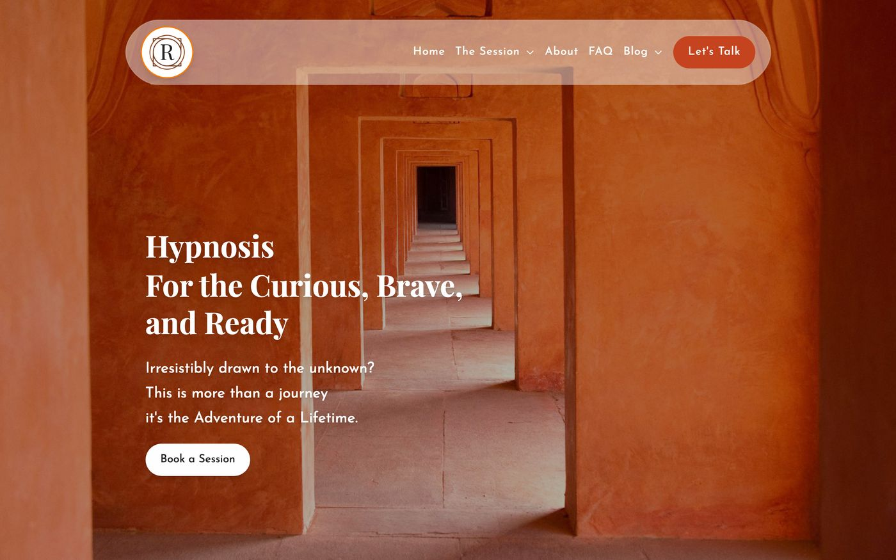
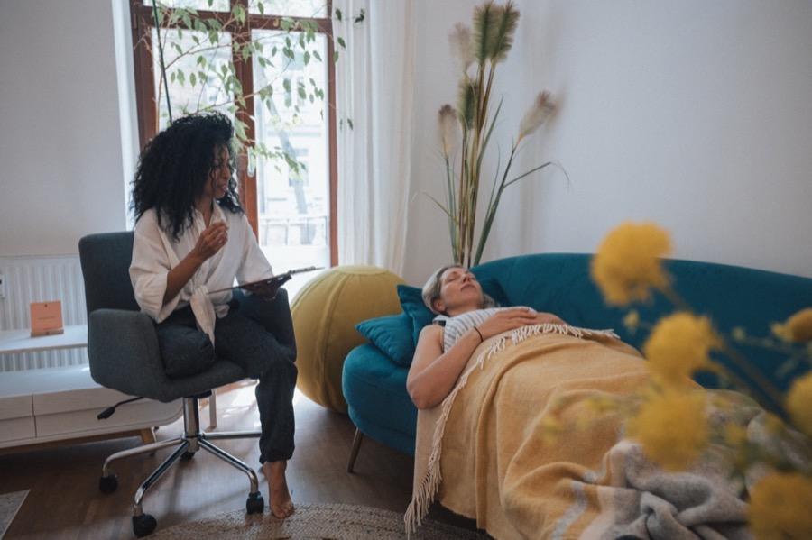
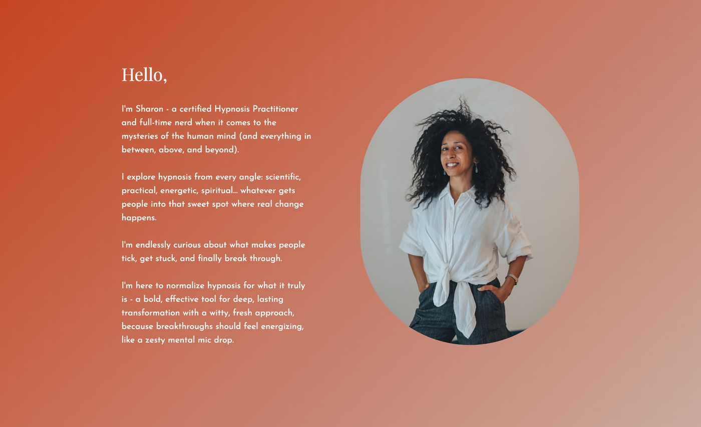
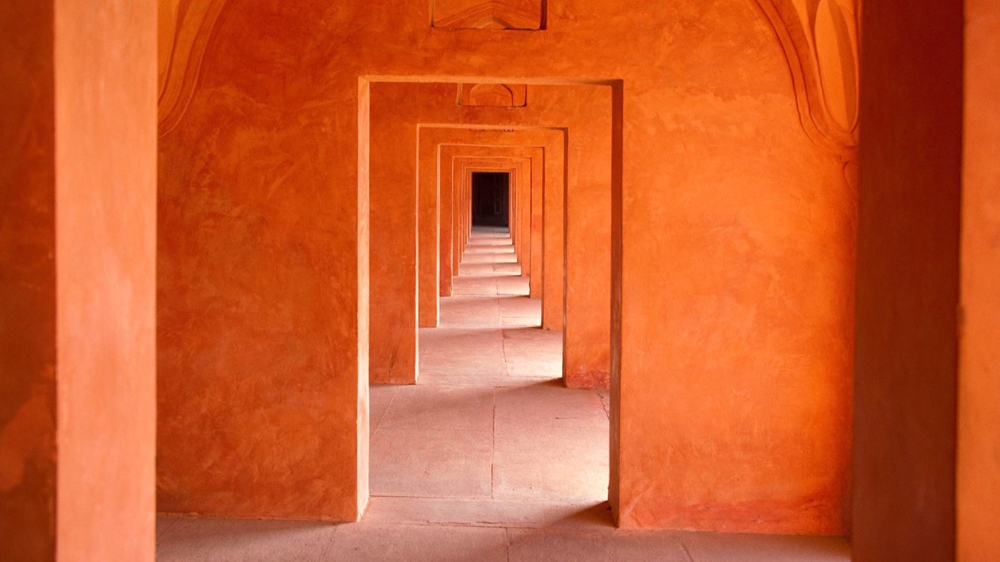
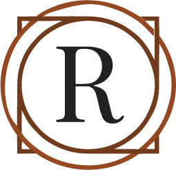

ReTurn Hypnosis
A one-person hypnosis practice in Berlin, asking a stranger to trust someone they've never met for a five-hour session.
The site had to do what a first conversation does: make people feel safe, explain an unfamiliar method without jargon, and let the person behind it come through. Warm terracotta, a real studio, a real face, and a booking flow that asks for nothing until someone is ready.

The Session
Each session is a 5-hour journey, a deep dive into you. Here's how it unfolds:




Hypnosis
For the Curious, Brave,
and Ready
Irresistibly drawn to the unknown?
This is more than a journey
it's the Adventure of a Lifetime.
Book a SessionTrust before booking
The session is explained in three steps, with times, before anyone is asked to commit. The FAQ answers the questions people are shy to ask.
A person, not a brand
A real studio and a real face instead of stock imagery. The voice is warm and a little witty, the way the sessions are.
It worked
For over a year it was the front door of the practice: people found it, trusted it and booked five-hour sessions.
I've stepped away from practice, so this finished site and its domain are available to take over, re-tailored to you. How that works